V1 · Execution
Check parsing and API compatibility in the target MATLAB release. For a GUI, test initialization and each callback separately.
Two study phases examine the gap between plausible output and verified MATLAB behavior: field vectors, geometric assumptions, desktop callbacks and separate repairs.
The repeated collection uses four web assistants, six prompts and three new chats per assistant–prompt condition. Collection began on 7 October 2026; receipt metadata span 7–8 October (66 receipts dated 7 October and six dated 8 October). Desktop evaluation used MATLAB R2024b Update 4 (24.2.0.2833386) on 8 October. Replicates are labeled r1–r3.
An archived pilot contains 20 initial files and two repairs, re-executed on 6 October. Its original generation metadata are incomplete. Pilot and repeated-collection counts are kept separate.
Availability, execution, physical agreement, source-feature presence and dynamic GUI behavior are separate outcomes. No-code service messages are not MATLAB failures; blank observations are not passes or zeros.
| Assistant | Recorded label/mode | Interpretation |
|---|---|---|
| ChatGPT | Exact model ID not displayed; Think off | Backend version unavailable |
| Gemini | Gemini 3.6 Thinking | Displayed interface label |
| Claude | Sonnet 5.5 Medium | Displayed interface label |
| DeepSeek | Exact model ID not displayed; Search on, DeepThink off | Backend version unavailable |
Interface labels are archived observations, not independent verification of backend identities. See generation metadata and recorded dispatch times.
Each cell shows files with external reference agreement / available code files. Three responses were planned per cell. The review uses labeled diary vectors and the geometry implemented in the source.
| Assistant | Q1.1 | Q1.2 | Q2.1 | Q2.2 | Self-check S2 |
|---|---|---|---|---|---|
| ChatGPT | 3/3 | 3/3 | 3/3 | 3/3 | 2/3 |
| Gemini | 1/2 | 2/2 | 2/2 | 1/1 | Not assessed (0 available) |
| Claude | 3/3 | 3/3 | 3/3 | 3/3 | 3/3 |
| DeepSeek | 3/3 | 3/3 | 3/3 | 3/3 | 2/3 |
Q1: 21/22 available files agree at the symmetric input; Gemini Q1.1 r2 fails parsing. Q2: 21/21 agree with their source-matched references, comprising 12 centered and nine endpoint geometries. Neither original Q2 prompt fixes the conductor endpoints. S2: 7/9 complete with both vectors externally confirmed; ChatGPT r3 stops at 200% disagreement and DeepSeek r1 stops at its error gate.
The external 0.5% threshold accommodates rounded printed output. At an external 0.1% threshold, 48 rather than 49 files agree. The differing file prints [2.45, 0, 0] against a reference near [2.4461, 0, 0]. The internal 0.1% self-check gate requested by S2 is a separate criterion.
Field results and threshold sensitivity · Labeled vectors and adjudication CSV
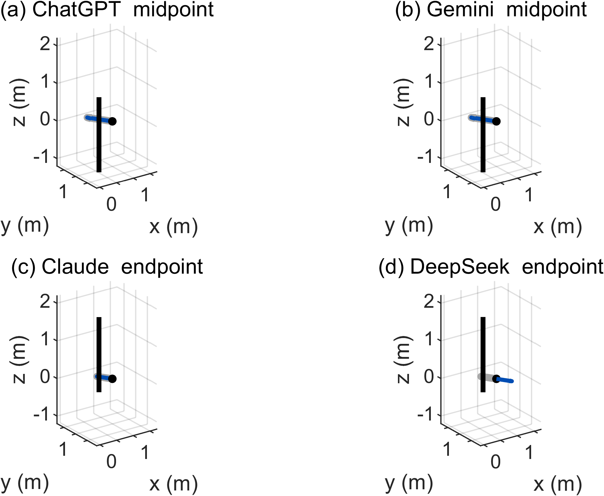
| Assistant | Code / planned | Initialized / available | Desktop findings |
|---|---|---|---|
| ChatGPT | 3/3 | 0/3 | All three initial files fail parsing. |
| Gemini | 0/3 | Not assessed | Three no-code responses. |
| Claude | 3/3 | 3/3 | Reviewer reports ≥3-second updates and successful callbacks; r1 logs a LaTeX warning. |
| DeepSeek | 3/3 | 2/3 | r1 logs timer/LaTeX errors with unresolved Update/Stop observations; r3 fails Start on deleted graphics. |
All nine available initial sources contain equation/rendering declarations, function explanations and section comments. Seven contain iterative position-clock solvers; DeepSeek r1/r3 do not meet this source criterion. Source presence does not establish accurate positioning or functioning features.
| Repair | Initialization | Remaining observation or failure |
|---|---|---|
| ChatGPT r1 v2 | Opens | Callback labels pass; observation duration unrecorded. |
| ChatGPT r2 v2 | Opens | Callback fields missing. |
| ChatGPT r3 v2 | Opens | Reviewer reports numeric updates without visible animation. |
| DeepSeek r2 v2 | Opens | Recurring GraphicsPlaceholder.XData timer failure; reviewer reports poor equation visibility. |
All four repairs overcome initialization failures; complete dynamic functionality is not established. Repairs are excluded from initial counts, and reviewer notes qualify binary labels.
Desktop evidence and reconciliation · Repair adjudication CSV · Static source coverage
This section presents the result tables, plots, GUI frames and MATLAB files from the earlier study archive. These materials precede the repeated collection. They are not additional repetitions and do not enter the 72-response or 49/52 counts.
The archived website and later desktop review are different evidence records. Where labels or errors differ, the desktop logs for the evaluated file take precedence. The older labels “most complete” and “runs after repair” are not used as rankings or proof of full functionality.
The tested charges are +2 nC at (−1, 0, 0) m and −2 nC at (1, 0, 0) m, with P = (0, 1, 2) m. The reference is E ≈ (2.4461, 0, 0) V/m. Agreement applies to this symmetric input; N/C and V/m are equivalent electric-field units.
| Assistant | Q1.1 (brief) output | Q1.2 (detailed) output | Assessment |
|---|---|---|---|
| ChatGPT | E = [2.446e+00, 0, 0] V/m, |E| = 2.446 V/m | E = [2.4461e+00, 0, 0] N/C, |E| = 2.4461 N/C | Agreement at tested input |
| Gemini | E_net = [2.446e+00, 0, 0] N/C, |E| = 2.446 N/C | E_net = [2.446e+00, 0, 0] N/C, |E| = 2.446 N/C | Agreement at tested input |
| Claude | E = [2.4461, 0, 0] V/m, |E| = 2.4461 V/m | E = (2.4461e+00, 0, 0) N/C, |E| = 2.4461 N/C | Agreement at tested input |
| DeepSeek | E = [2.4461e+00, 0, 0] N/C, |E| = 2.4461 N/C | E_total = [2.446e+00, 0, 0] N/C, |E| = 2.446 N/C | Agreement at tested input |
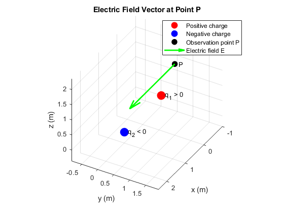
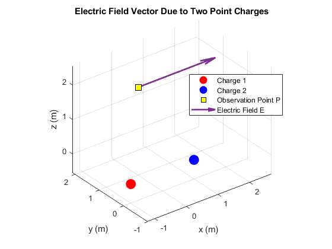
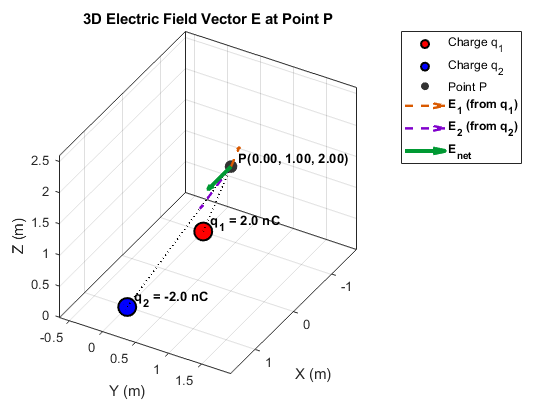
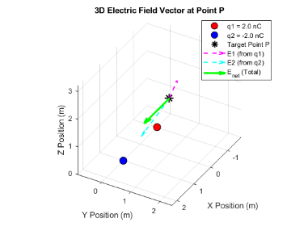
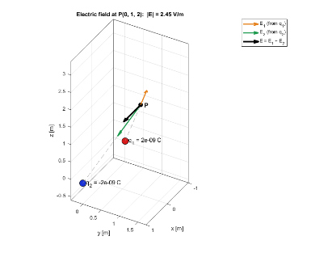
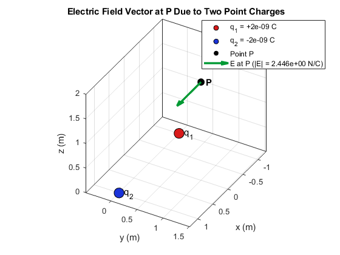
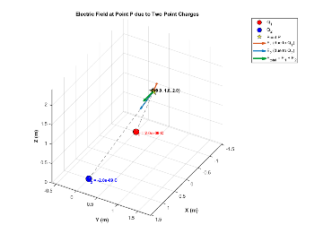
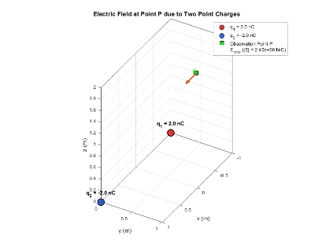
The current is 1 A in +z, length 2 m, A = (0.25, 0.5, 0) m and P = (1, 1, 0) m. Centered and endpoint references differ. The table preserves values reported in the earlier page; its agreement labels refer to each implemented geometry. DeepSeek Q2.1 reverses the analytical direction without flagging its disagreement with the numerical result.
| Assistant | Prompt | Geometry assumed | Reported B (T) | |B| (T) | Assessment |
|---|---|---|---|---|---|
| ChatGPT | Q2.1 | Centered | (−9.141924, 13.71289, 0)×10⁻⁸ | 1.648084×10⁻⁷ | Reported agreement |
| Q2.2 | Centered | (−9.142334, 13.71350, 0)×10⁻⁸ | 1.648158×10⁻⁷ | Reported agreement (0.004 %) | |
| Gemini | Q2.1 | Centered | (−9.1419, 13.713, 0)×10⁻⁸ | 1.6481×10⁻⁷ | Reported agreement |
| Q2.2 | Centered | (−9.146, 13.72, 0)×10⁻⁸ | 1.649×10⁻⁷ | Reported agreement (≈0.05 %) | |
| Claude | Q2.1 | Starts at A | (−5.6104, 8.4156, 0)×10⁻⁸ | 1.0114×10⁻⁷ | Reported agreement for its geometry |
| Q2.2 | Starts at A | (−5.610367, 8.415550, 0)×10⁻⁸ (numerical = analytical) | 1.011423×10⁻⁷ | Reported agreement; self-check 4.4×10⁻⁹ | |
| DeepSeek | Q2.1 | Starts at A | analytical (5.61037, −8.41555, 0)×10⁻⁸; numerical (−5.61402, 8.42103, 0)×10⁻⁸ | 1.0114×10⁻⁷ | Sign error, not flagged |
| Q2.2 | Centered | (−9.1460, 13.719, 0)×10⁻⁸; infinite wire 2.2188×10⁻⁷, ratio 0.7431 | 1.6488×10⁻⁷ | Reported agreement (≈0.04 %) |
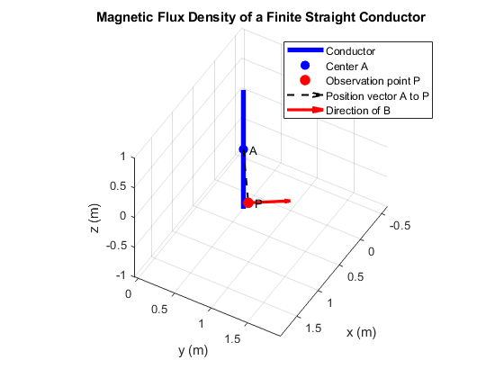
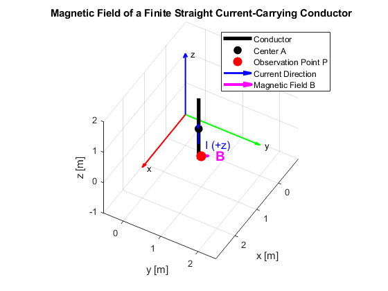
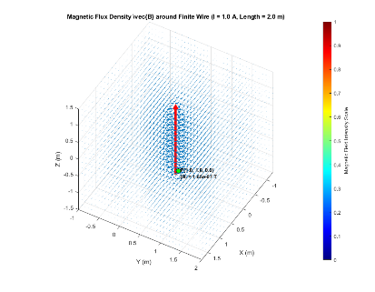
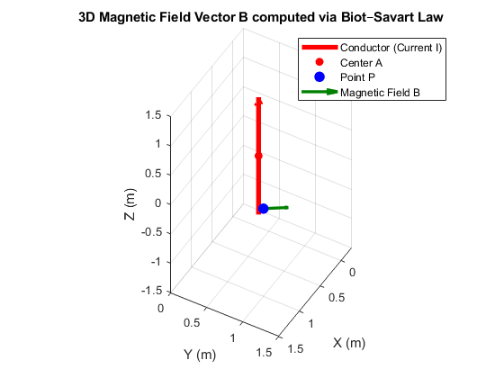
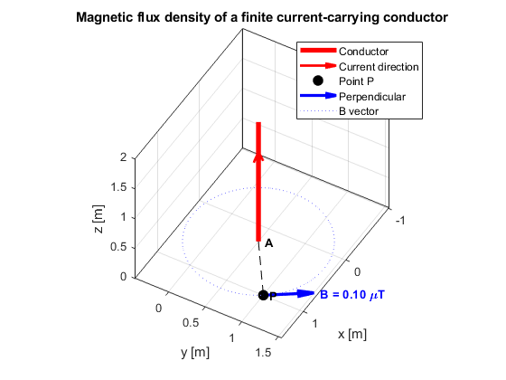
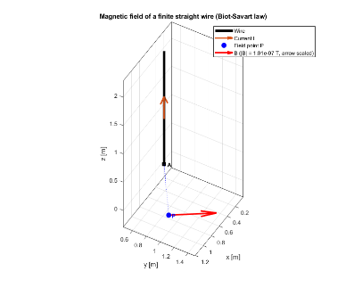
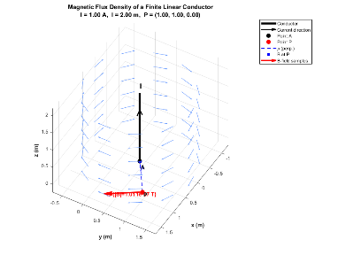
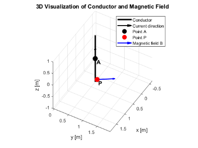
| Assistant | Later pilot desktop findings | Interpretation |
|---|---|---|
| ChatGPT | Initial parsing failure; repair initializes but update/reset fail on deleted handles. | The earlier page reports an invalid character at line 1; later pilot review records a multiline-string failure at line 98. Error messages must be tied to the evaluated file, not treated as interchangeable. |
| Gemini | Initialization and short Start/update/Stop test reported successful. | Applies to exercised paths, not general positioning accuracy. |
| Claude | Short Start/update/Pause/Reset tests reported successful. | The former “most complete” description is not a comparative reliability result. |
| DeepSeek | Initial unsupported uicontrol Interpreter property; repair passes short exercised callbacks. | Prescribed animation is not a validated receiver-position estimator. |
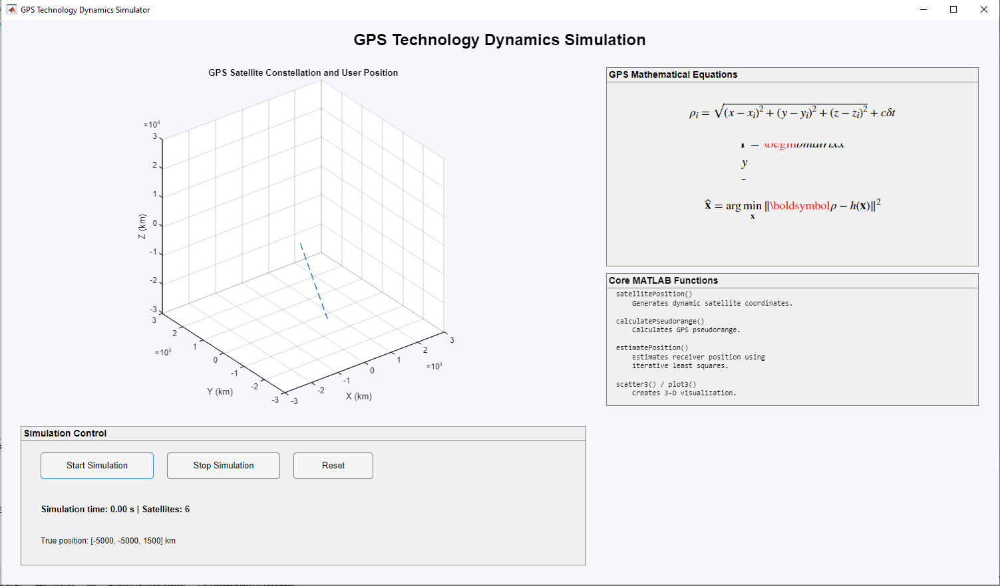
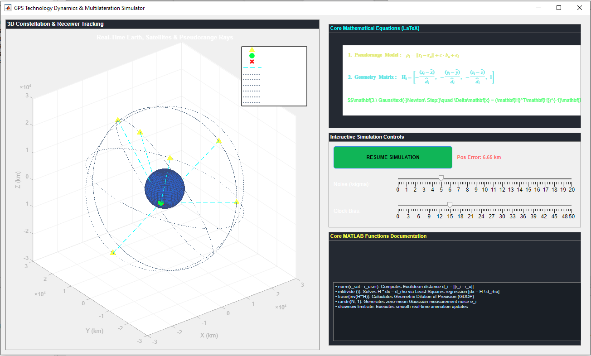
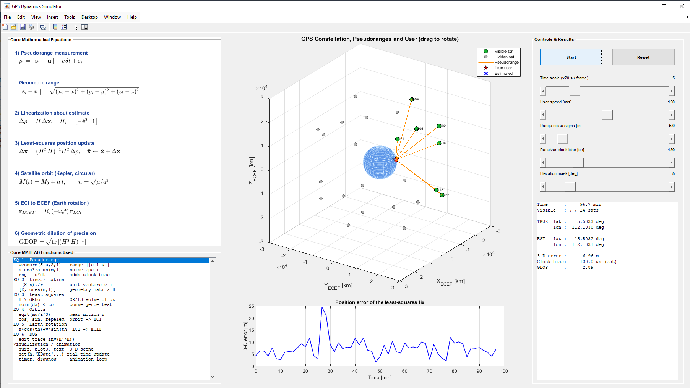
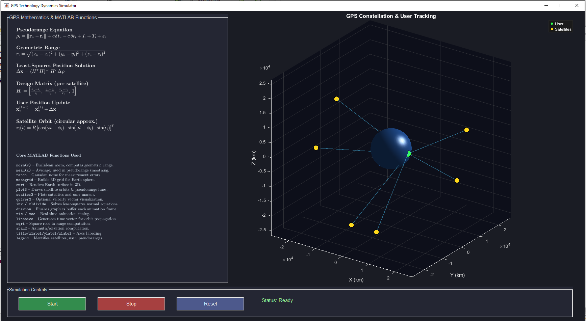
See preserved pilot files and the separate pilot manifest. This archive does not replace the repeated Q3 results above.
The 24 files include helper functions and repairs; this file count is not the number of initial responses. Files are retained byte-for-byte, including their observed limitations. Download or inspect them without assuming they will execute correctly.

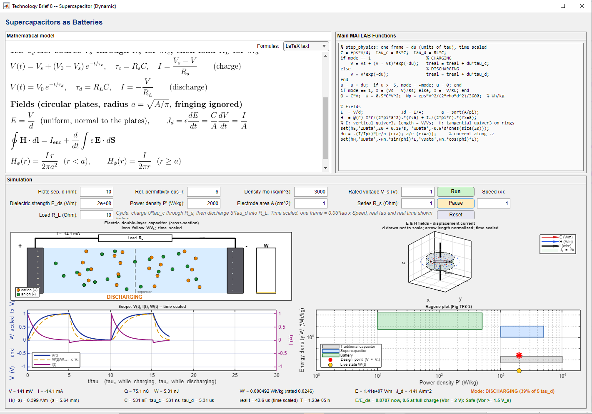
Inspect all 72 initial responses and four separate repairs. A field result may agree with its reference while a GUI only initializes. The explorer retains that distinction; it does not combine these outcomes into a model score.
Loading archived results…
| Assistant / replicate | Prompt | Collection | Outcome | External error | Evidence |
|---|
C1: GPS equations and rendering declarations; C2: function explanations; C3: an iterative joint position–clock solver; C4: section comments. These source indicators do not demonstrate successful rendering, animation or positioning accuracy.
| Assistant / replicate | C1 | C2 | C3 | C4 |
|---|
DeepSeek r1/r3 do not meet C3. Truth-dependent initialization also limits interpretation of other implementations. See definitions and review attribution.
Check parsing and API compatibility in the target MATLAB release. For a GUI, test initialization and each callback separately.
Compare the full generated vector against an independent reference for the same geometry. Distinguish the external tolerance from an internal self-check.
Inspect endpoints, direction, units, symmetry and limiting behavior. Two agreeing implementations may still share a modeling error.
For the pilot finite-wire input, centered and endpoint interpretations give magnitudes of approximately 1.648 × 10−7 T and 1.011 × 10−7 T. Their difference is about 39% relative to the centered value. A reversed vector has about 200% vector error even if its magnitude is correct.
| Element | Specification | Risk addressed |
|---|---|---|
| 1. Context | MATLAB release, toolboxes, course level | Unsupported functions |
| 2. Physical model | Governing law, equations, sign conventions | Wrong physics |
| 3. Geometry | Coordinates, endpoints, values, SI units | Silent assumptions |
| 4. Verification | V1–V3 checks with a tolerance | Unflagged errors |
| 5. Visualization | Plot type, labels, scaling, animation | Misleading plots |
| 6. Code constraints | Local functions, UI framework | Non-executable code |
| 7. Documentation | Equation-to-code comments, assumptions | Unexplained code |
This is a proposed assessment workflow; classroom effectiveness has not been evaluated.
The three-panel interface places equations, MATLAB implementation and visualization side by side. Editable parameters and Run/Pause/Reset controls illustrate how a model can be explored and checked.
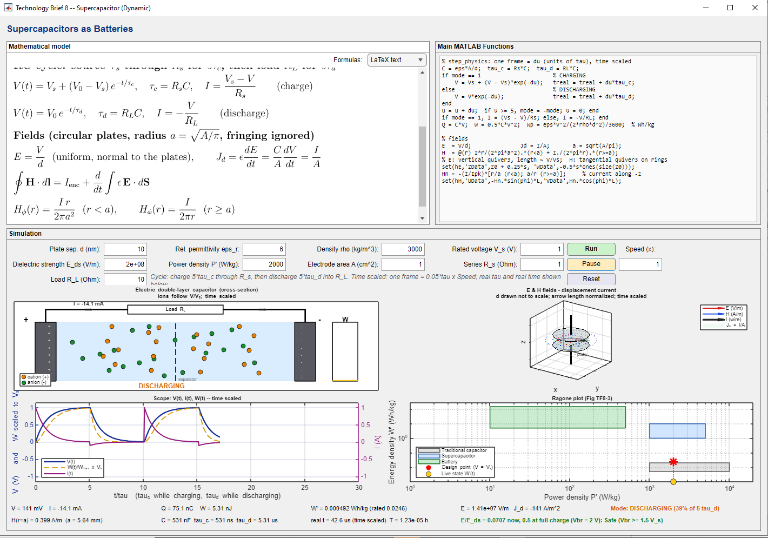
The example combines RC charging, schematic double-layer ion motion, the field between plates, a displacement-current magnetic-field illustration and a Ragone plot. These representations require their own modeling checks; the screenshot does not validate microscopic transport, runtime behavior or learning gains.
Students can state assumptions, predict a field, implement the model and explain discrepancies against an independent reference. A convincing plot is not sufficient evidence of physical correctness.
Q1 addresses point charges; Q2 addresses a finite straight conductor; Q3 requests a GPS interface. Self-check prompt S2 explicitly fixes the centered-wire geometry and asks for separate analytical/numerical solutions, direction checks and a disagreement gate.
Write MATLAB code to visualize the electric field vector E at a point P(Px, Py, Pz) in 3D due to two point charges.Download exact prompt
Write MATLAB code that: (1) computes the electric field vector E at a point P(Px, Py, Pz) in 3D space due to two point charges located at specified positions with given magnitudes; (2) plots the electric field vector at point P using a 3D quiver plot; (3) ensures the code is modular, with functions for electric field calculation (using Coulomb's law) and visualization (plotting with quiver3); (4) provides clear comments explaining each step (mathematical formulation, function definitions, plotting, and main script execution).Download exact prompt
A free-standing linear conductor of length l carries a current I at A(Ax, Ay, Az) parallel to the z axis. Write MATLAB code to plot the magnetic flux density B at a point P(Px, Py, Pz) in 3D.Download exact prompt
Write MATLAB code that: (1) models a free-standing linear conductor of length l carrying a current I, located at point A(Ax, Ay, Az), oriented parallel to the z-axis; (2) computes the magnetic field vector B at a point P(Px, Py, Pz) using the Biot–Savart law; (3) plots the magnetic field vector at point P in 3D space; (4) includes clear comments and uses vector visualization for plotting.Download exact prompt
Create a graphical user interface (GUI) in MATLAB for simulating GPS technology dynamics. Requirements: (1) display GPS-related equations (e.g., pseudorange equation, position calculation) using LaTeX rendering inside the GUI; (2) show and explain the MATLAB functions used to implement the equations; (3) implement a dynamic simulation of GPS signal reception and positioning, animating satellite positions and user movement in 3D and updating pseudorange lines and user position in real time; (4) comment each section of the code (GUI design, LaTeX integration, simulation logic, visualization).Download exact prompt
Write a MATLAB script for an undergraduate EM course (base MATLAB, ASCII characters only) that: (1) models a straight conductor, l = 2 m, I = 1 A in +z, centered at A(0.25, 0.5, 0) m (z from −1 to 1 m), observation point P(1, 1, 0) m, SI units; (2) computes B at P with the closed-form finite-wire formula and, independently, by numerical Biot–Savart integration; (3) prints both vectors and norm(B_num-B_ref)/norm(B_ref), checks the right-hand rule, and stops with a message if the vector error exceeds 0.1%; (4) plots the wire, A, P and B with quiver3, labeled axes with units, a legend and axis equal; (5) uses local functions for each solution and the plot, and comments each equation.Download exact prompt
Raw extracted code and evaluation code are retained in the data package. Execution and callback failures are retained as observed outcomes. Local paths and private conversation identifiers have been redacted. File provenance distinguishes original and exported hashes; file checksums verify the supplementary files.
Desktop reruns write result files; use a separate working copy. A batch run cannot substitute for observed GUI animation and callbacks. See publication and licensing notes.
Three responses per condition and one configuration per field task provide descriptive cases, not stable reliability estimates. Q1 is symmetric; asymmetric, singular and zero-field cases were not assessed. Interface modes differ, backend identities are incomplete, and pilot provenance is limited.
Source coverage has a single review, documented in Supplement S3; inter-rater agreement was not measured. Desktop GUI review contains missing callbacks and repair durations. Single screenshots cannot establish animation. GPS is an interface programming stress test, not a validated propagation or positioning model.
The teaching workflow asks students to state assumptions, predict directions, compute independent references and explain failed checks. No student participants, control group or learning tests were included. No assistant ranking or learning gain is claimed.